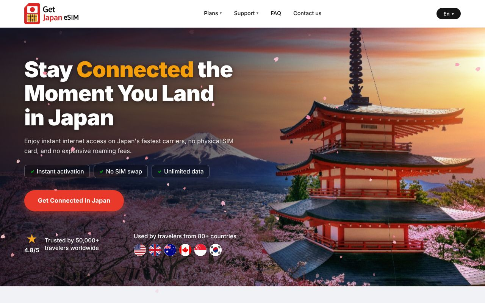
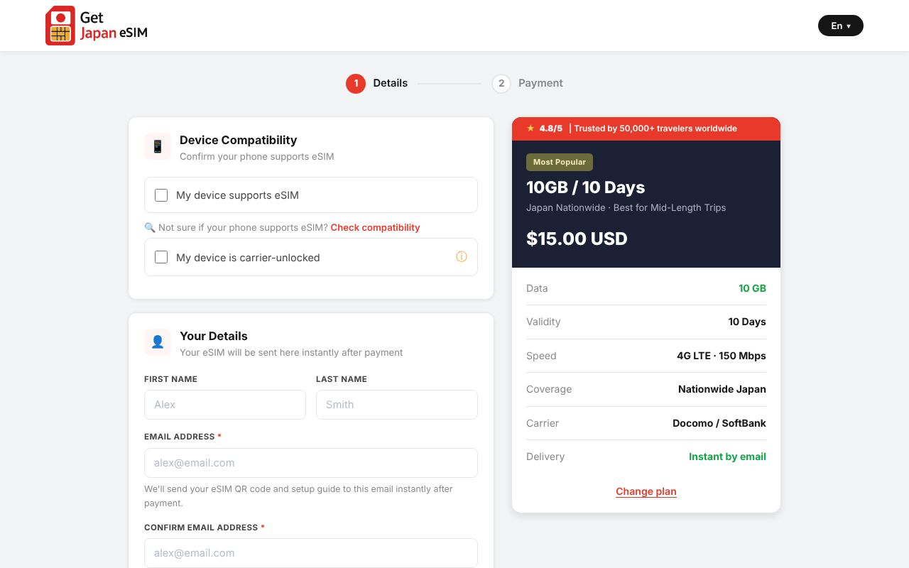

EC サイト / 越境・多言語
Get Japan eSIM — 訪日旅行者向け eSIM 販売サイト
海外からの旅行者が日本到着前にデータ通信プランを購入し、メールで届く QR コードで即日開通できる EC サイト。 プラン比較から決済、購入後のマイページまでを一貫して設計・実装しました。
- 商品と決済: 全国・多国間の 2 カテゴリ × 3 プラン。Stripe Checkout で決済し、Webhook で購入確定を受信。署名検証と完了画面での決済再確認で、URL 直打ちによるなりすましを防止
- 多言語・多通貨: 英語・ドイツ語・中国語の 3 言語、USD / EUR の 2 通貨を切替。100 箇所以上の文言を辞書管理
- 購入後体験: メール認証付きの「My eSIMs」ポータルで QR を再発行。利用規約・返金・プライバシー・法的表記ページを整備
- 運用コスト設計: Composer や SDK に依存しない PHP で Stripe API を直接呼び出し、月額数百円のレンタルサーバーでも動作。鍵未設定時はモック決済で先行開発できる仕組み
- 品質: スマホ表示の崩れを 1 件ずつ潰し込み、Playwright で画面確認。コミット履歴に改善の経緯を残す運用
HTML / CSS / JavaScriptPHPStripe Checkout / Webhooki18nPlaywrightレンタルサーバー
アパレル EC への応用: 商品カタログ・カート・決済・購入後メール・会員ページという EC の基本導線を、決済事業者連携まで含めて一式構築した経験です。